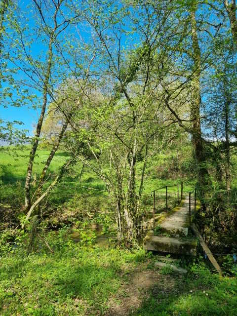

Le jour de notre naissance, nous recevons une carte, la carte de notre
ciel natal. Les placements des planètes nous renseignent sur nos besoins, nos potentiels, nos
défis de vie, nos compétences particulières… Comme si l'Univers nous avait livré avec un mode
d'emploi !
A certaines étapes de notre vie, nous nous sentons perdus, en crise. Le couple est bien installé,
la famille créée, la situation professionnelle est stable… et pourtant, quelque chose cloche. La
question est posée : que voulez-vous vraiment ? Qui êtes-vous au fond ? Et les doutes nous
submergent.
Un jour, quelqu'un m'a rapporté cette citation d'Albert Einstein :
Tout le monde est un génie. Mais si vous jugez un poisson à sa capacité de grimper à un
arbre, il vivra toute sa vie en croyant qu'il est stupide.
J'ai passé 40 ans dans la peau du poisson qui grimpe à l'arbre, je suis arrivée très haut et je
me suis épuisée. Laissez-moi vous aider à découvrir votre génie intérieur pour vous permettre
d'être plus aligné. Descendez de l'arbre, osez briller!
A propos de moi
On fait l'astrologie que l'on est − Jo√´lle de Gravelaine
Bien
dire, c'est la signification de mon prénom, Bénédicte. Et pourtant, il
m'a fallu du temps pour accepter ma voix, la faire entendre. Je préférais écrire, passer par le
texte. De manière progressive, j'ai perdu l'usage de ma main droite. Mon corps m'a forcée à passer
du courriel au téléphone, de l'écrit à l'oral, à utiliser et à accepter ma voix.
Lorsque j'ai découvert l'astrologie, je cherchais une réponse à cette question :
pourquoi moi ? Pourquoi cela m'arrive à moi ? En plongeant profondément dans mon thème, j'ai trouvé
bien plus que cette réponse. Je suis arrivée à une bien meilleure compréhension de moi-même, j'ai
découvert ce qui me fait vibrer, mes talents innés, les prises de conscience à avoir pour avancer,
une explication à mes passages à vide, aux périodes difficiles de ma vie… et bien plus encore !
Dans ma première vie professionnelle en tant que bibliothécaire, j'avais à cœur de
rendre le savoir accessible à toutes et à tous. En tant que manager, j'adorais aider mes
collaborateurs à valoriser leurs compétences particulières, les voir s'épanouir et briller.
Avec l'astrologie, j'allie ces deux aspects. Découvrir votre carte natale me fait
le même effet que commencer un nouveau roman. J'apprends à connaître votre personnalité, votre
manière de gérer vos émotions, votre façon d'apprendre et de communiquer, d'aimer, de vous mettre en
action, vos défis…
 Pourquoi le héron ? Fascinée par cet animal depuis toujours, j'ai réalisé
avec le temps que les échassiers avaient une signification particulière dans ma vie. Un vol de
cigognes au-dessus de ma maison a déclenché la naissance de ma deuxième fille, 8 jours après terme.
Au plus fort de mes douleurs à la main, je rêvais de héron et en voyais à chacune de mes balades.
J'ai recherché la symbolique de cet oiseau et ai découvert qu'il est synonyme de renaissance, ce qui
m'a donné beaucoup d'espoir. Et lorsque j'ai décidé d'en faire mon logo, j'ai appris que Thôt,
premier Dieu de l'astrologie de l'Egypte ancienne, est représenté sous forme d'ibis, un échassier.
Son épouse, Seshat, est devenue ensuite la déesse « officielle » des astrologues, des architectes
et… des bibliothécaires ! La boucle est bouclée.
Pourquoi le héron ? Fascinée par cet animal depuis toujours, j'ai réalisé
avec le temps que les échassiers avaient une signification particulière dans ma vie. Un vol de
cigognes au-dessus de ma maison a déclenché la naissance de ma deuxième fille, 8 jours après terme.
Au plus fort de mes douleurs à la main, je rêvais de héron et en voyais à chacune de mes balades.
J'ai recherché la symbolique de cet oiseau et ai découvert qu'il est synonyme de renaissance, ce qui
m'a donné beaucoup d'espoir. Et lorsque j'ai décidé d'en faire mon logo, j'ai appris que Thôt,
premier Dieu de l'astrologie de l'Egypte ancienne, est représenté sous forme d'ibis, un échassier.
Son épouse, Seshat, est devenue ensuite la déesse « officielle » des astrologues, des architectes
et… des bibliothécaires ! La boucle est bouclée.